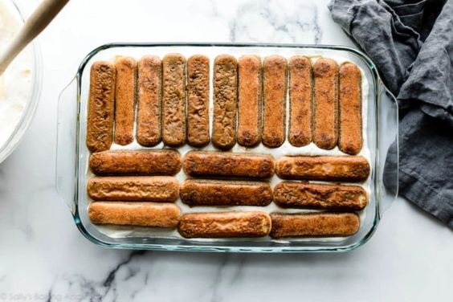
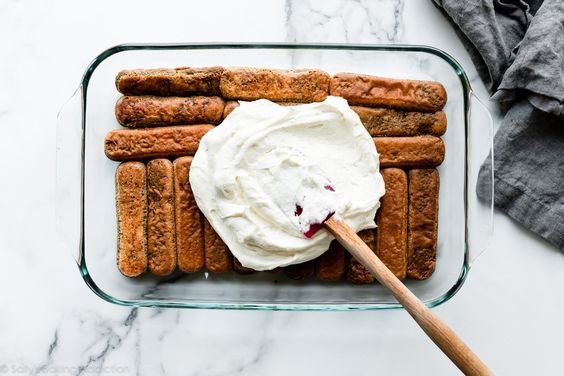
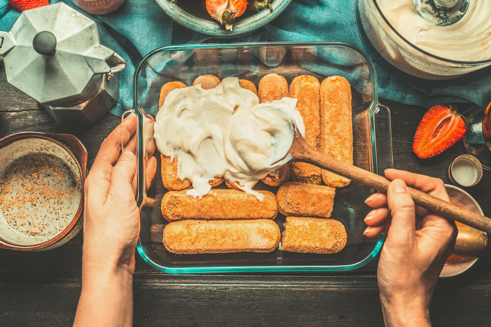
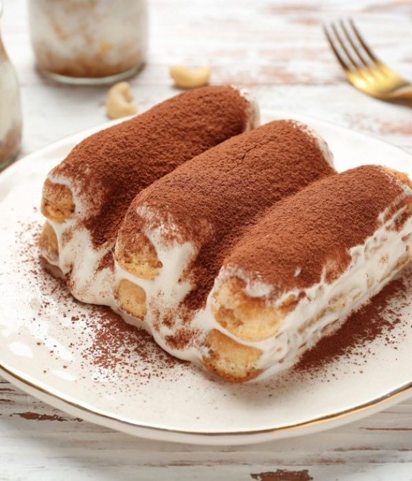

Teramisu |
Postet on juni 2019 / postet in Shiko me Video | |
|  |  |  |
|
Teramisuështë ëmbëlsira italiane më e njohur në gjithë botën. Kjo lloj ëmbëlsire është dhe do të mbetet një nga ëmbëlsirat më të mira italiane Receta klasike Tiramisu përfshin pesë pjesë të vezëve të pulave, pesë lugë sheqer, 210 mililitra espresso, 375 gram djathë "mascarpone", pesë lugë liker aromatik, 45 copë cookies Savoyardi, pluhur kakao për dekorim. Është e nevojshme për të ndarë yolks nga proteinat. Beat proteinat në masë të trashë të dendur. Sekatarisht mundi yolks me një sheqer të mirë, vëllimi i përgjithshëm duhet të rritet tre deri në katër herë. Djathë duhet të përzihet me mjeshtëri me yolks në një masë homogjene, pastaj gjithashtu të prezantojë me kujdes një masë proteina.
Perbersit
Baza e ëmbëlsirë është biskota biskota, të cilat mund të përgatiten lehtësisht në mënyrë të pavarur. Tipari i tij është një formë - në formën e qarqeve të voglaReceta klasike Tiramisu përfshin pesë pjesë të vezëve të pulave, pesë lugë sheqer, 210 mililitra espresso, 375 gram djathë "mascarpone", pesë lugë liker aromatik, 45 copë cookies Savoyardi, pluhur kakao për dekorim. Është e nevojshme për të ndarë yolks nga proteinat. Beat proteinat në masë të trashë të dendur. Sekatarisht mundi yolks me një sheqer të mirë, vëllimi i përgjithshëm duhet të rritet tre deri në katër herë. Djathë duhet të përzihet me mjeshtëri me yolks në një masë homogjene, pastaj gjithashtu të prezantojë me kujdes një masë proteina. ose vija. |
||

Pyetje dhe Pergjigje
|
||
| Fakeminderit qe na ndjeket | Ju befte mire! | |